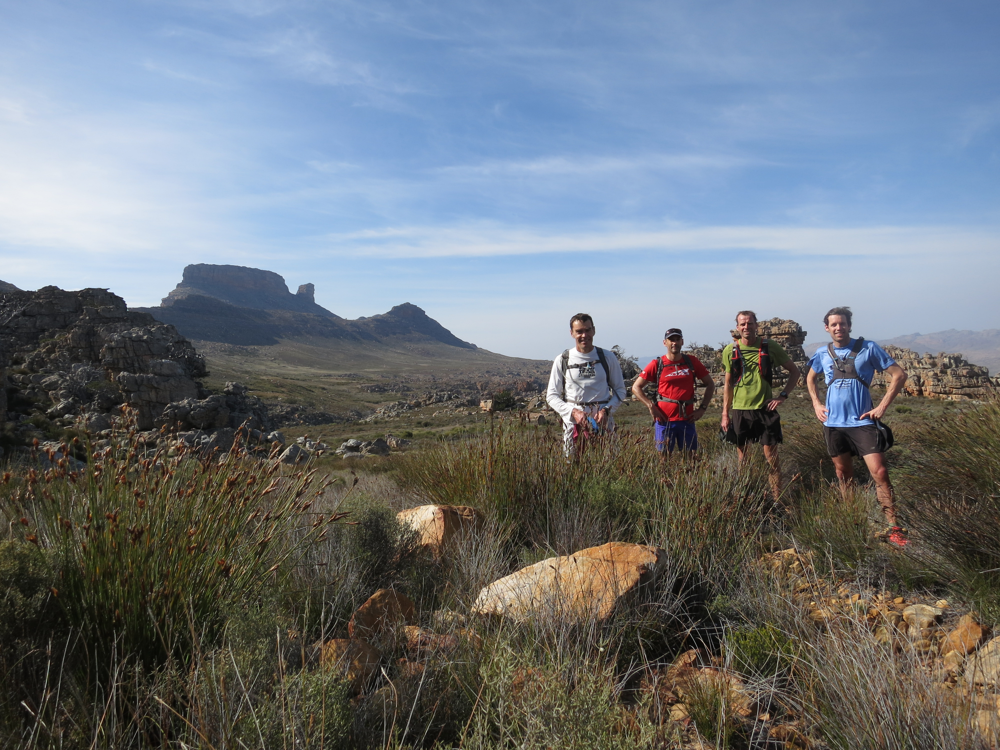
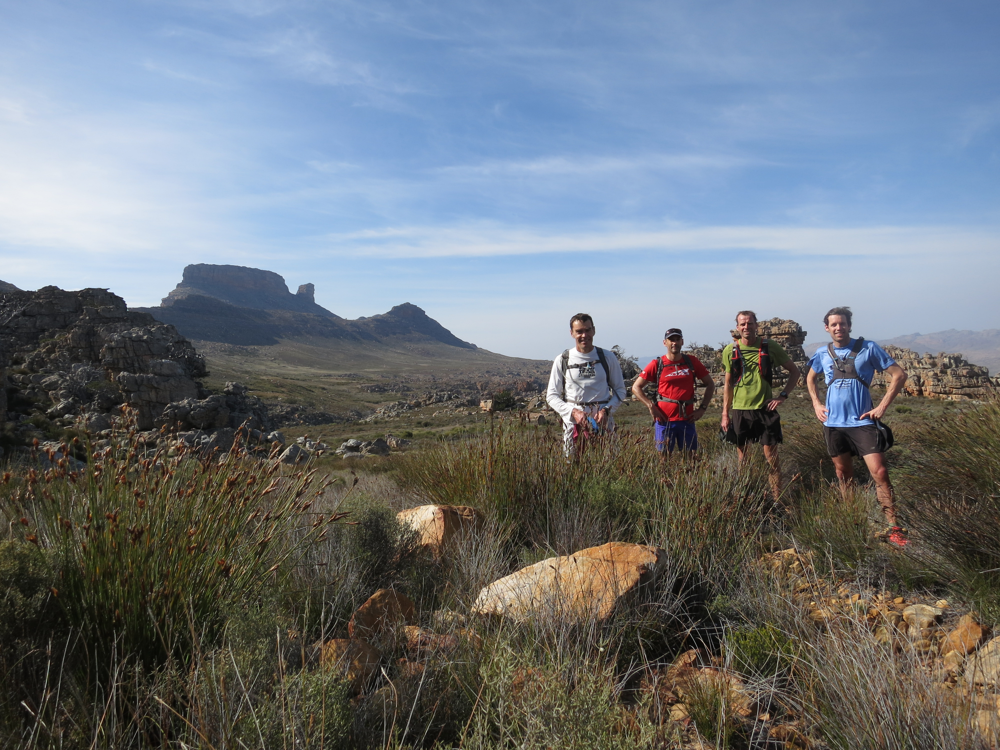

Dados Pessoais

Meu principal interesse acadêmico/profissional consiste desenvolver métodos que auxiliem na tomada de decisão em Projetos de Simulação a Eventos Discretos, através de Gestão do Conhecimento, otimização combinatória e inteligência artificial.
Tenho ainda interesses de pesquisa e desenvolvimento em Computação Paralela, Análise de Algoritmos, Programação Linear e Pesquisa Operacional
Em meus momentos de folga, gosto de praticar:

 
